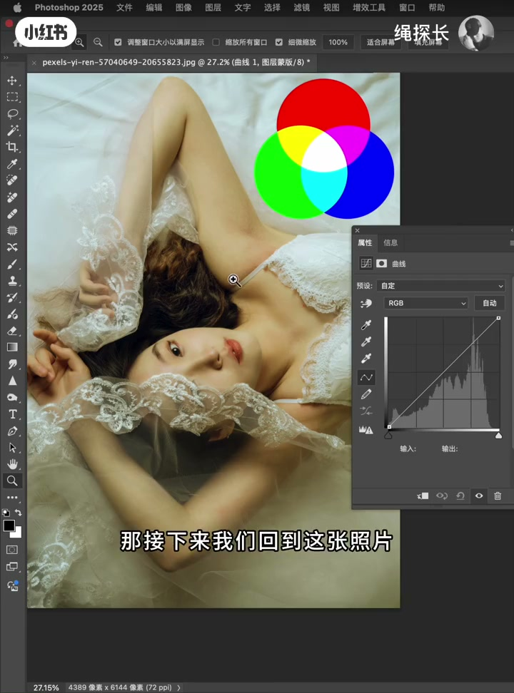
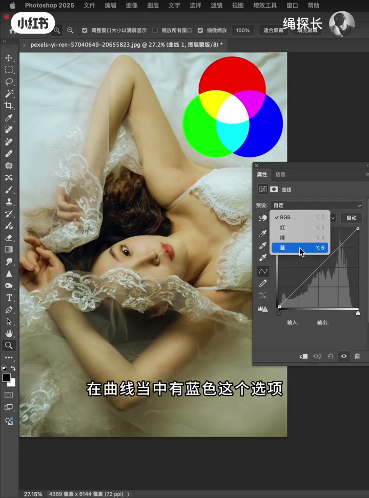
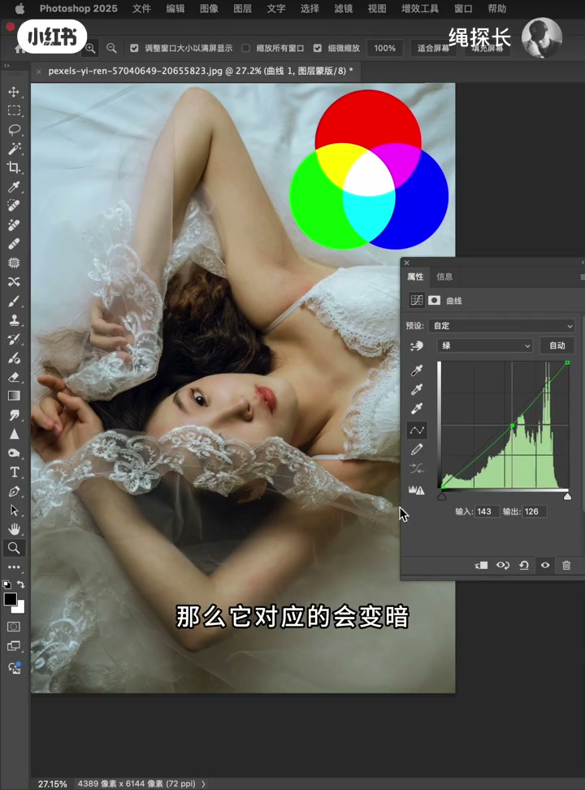
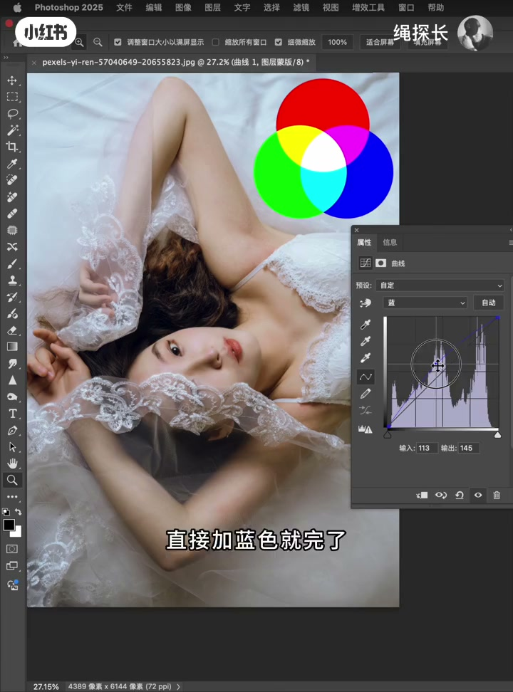

内容要点
一支 4 分 10 秒的 PS 曲线调色原理课。新手用曲线觉得乱，是因为不知道曲线的互补和混合原理。视频先讲 RGB 三色叠加的知识：RGB 三色叠加变白色（代表亮暗）、混合出青黄品红三补色；再用「肤色偏黄怎么剪黄」这个真实案例，演示两种解法——互补法（加蓝抵黄）与混合法（减红减绿让蓝主导），最后总结：曲线上提变亮、下压变暗，配合其他工具才能完成好调色。
知识结构
红绿蓝三种颜色叠加变白色，在 PS 里当亮暗处理。曲线里的 RGB 就是三色叠加，调整它只能改变照片的亮和暗。三色两两混合又出三种新颜色：青、黄、品红。红色对青色、蓝色对黄色、绿色对品红（平红）。
黄是蓝的互补色，蓝多黄就少。曲线里没有黄色选项，但可以选蓝色往上提，画面中的黄就被抵消了。这是用互补原理做肤色调色，直接加蓝、不用调亮度，适合提亮的调性。
黄色由红+绿混合而成。要剪黄，就为画面减红减绿，蓝色自然成为主导色抵消黄色。但曲线下压会让画面变暗，需要回到 RGB 提亮——适合要暗调影调的场景。
曲线调整非常简单：根据三原色互补和混合原理。RGB 只调亮暗、不改颜色。光靠曲线没法完成所有工作，要配合 PS 其他工具才能达到想要的调色效果。
曲线调色的两根支柱：①互补原理——想剪黄就加蓝（提蓝曲线）；②混合原理——减红减绿让蓝主导（压红绿曲线）。曲线往上提画面变亮、往下压画面变暗；RGB 通道只调亮暗。
00:00-00:53三原色的叠加与互补
「人像调色最重要的调色工具之一就是曲线，特别是新手同学在不知道曲线的互补和混合原理之前，使用曲线调色会觉得非常乱，完全找不到调色的规律。」
「红绿蓝三种颜色叠加在一起，它会变成白色，在 PS 里面会当做亮暗来处理。」所以曲线里选 RGB 调曲线，只能改变照片的亮和暗。
「红绿蓝这三种颜色叠加，又多出来了三种颜色，分别是青、黄、品红。红色的对立色就是青色，蓝色的对立色就是黄色，绿色的对立色就是品红，也称之为平红。」
00:53-02:01互补法：加蓝剪黄
回到照片：「你可以看到人物的肤色特别的黄。那如果肤色黄，我们是不是需要把黄色给剪掉？」但曲线里没有黄色选项，只有红绿蓝三种颜色。
「蓝色的对立色就是黄色，也称之为互补色。要想剪去照片中的黄色，我们就需要对应的为照片当中多增加一些蓝色。因为蓝和黄互补，蓝色多了黄就少，黄色多了蓝就少。」
「正好在曲线当中有蓝色这个选项，你选择蓝色往上一提——你看画面中的黄是不是就被抵消了。」这印证了互补原理：想让黄色少，就给它增加蓝，形成一个平衡。

02:01-03:02混合法：减红减绿让蓝主导
「接下来我们用混合原理来做肤色调色，还是还原到这个偏黄的肤色的原图。」「这个黄色是由什么颜色组成的？从这个图你很容易发现，是由红色和绿色叠加在一起混合成了黄。」
「那现在我们要用混合原理把黄给削掉，是不是要为画面中减绿减红啊？我们把画面中的红色减去、绿色减去，蓝色是不是就是主导了？蓝色是主导，自然就把黄色给抵消了。」
实操验证：减红、再减绿，「大家看肤色是不是就没有那么黄了」。但画面会变暗——「因为我们的曲线是以下压的形式在调整」。
「这个时候我们只需要回到 RGB 把它提亮，这样也能削弱画面中的黄色部分，让肤色看上去更自然一些。」

03:02-04:10方法选择与边界
「通过这两个实验，大家应该知道：如果曲线是往上提的，画面会变亮；曲线是往下压的，画面会变暗。」
「像这种照片，我们肯定是优先选择互补的方式、往上提曲线的方式来校色的——直接加蓝色就完了，就不用去调亮度了。」
「这两种方法各有利弊。有些适合调人像，有些适合调风景，看你的影调需要什么样的形态。你需要那种暗一点的影调，就要用互补的方式去调；如果像这种人像想要透、想要亮一点，尽量就用互补的方式去调。」
「曲线的调整是非常简单的，它就是根据三原色互补和混合的原理来调。RGB 只能调整亮暗，不能改变颜色。想要调好一张照片，光靠一个曲线工具是没有办法完成所有工作的，你还要配合 PS 里面其他几个工具来配合使用，才能达到你想要的调色效果。」


完整转录（120段）
以下文本由 Whisper medium 模型自动转录，可能存在少量识别误差，已尽可能修正。
人像调色最重要的调色工具之一就是曲线
特别是新手同学在不知道曲线的互补和混合原理之前
使用曲线调色会觉得非常的乱
完全找不到调色的规律
接下来我用三分钟的时间教会你如何使用曲线以及曲线的调色原理
大家可以看一下我这里做了一个红绿蓝三种颜色的叠加
那么在曲线当中啊
对应的也有红绿蓝和叠加色RGB
红绿蓝三种颜色叠加在一起
它会变成白色
在PS里面会当做亮暗
来处理
那我们在曲线当中
如果选择RGB
我们去调整这个曲线
它只能改变照片的亮和暗
然后你可以看一下红绿蓝这三种颜色叠加
又多出来了三种颜色
分别是黄青梅红
那红色的对立色就是青色
蓝色的对立色就是黄色
绿色的对立色就是梅红色
也称之为平红
那接下来我们回到这张照片
你可以看到人物的肤色特别的黄
那如果肤色黄
我们是不是需要把黄色给剪掉啊
但是我们在曲线当中
是没有让你去选择黄色颜色去调整的
它只有红绿蓝这三种颜色
那如何才能剪去皮肤上的黄色呢
这就不得不提
我们要看一下互补和混合原理了
蓝色的对立色就是黄色
也称之为互补色
那刚才也说到皮肤偏黄
那要剪黄
那要想剪去照片中的黄色
那我们就需要对应的为照片当中啊
多增加一些蓝色
因为蓝和黄色互补
蓝色多了黄就少
黄色多了蓝就少
它是一个互补的原理
那正好在曲线当中有蓝色这个选项
你选择蓝色往上一提
哎你看画面中的黄是不是就被抵消了
那这也就印证了我刚才所说的
蓝色如果多了黄色就会变少
黄色如果多了蓝色就会变少
那么刚才我们这个原图就是黄色很多
想让黄色少就要给它增加蓝
这样就形成了一个平衡
那这个方法是用互补原理来做的肤色调色
那接下来我们来一个混合原理来做肤色调色
还是还原到这个偏黄的肤色的原图
这个黄色是由什么颜色组成的
从这个图你很容易发现是由红色和绿色叠加在一起
混合成了黄
那现在我们要用混合原理把黄给削掉
那怎么办呢
是不是要为画面中减绿减红啊
我们把画面中的红色减去绿色减去
蓝色是不是就是主导了
那蓝色是主导
自然就把黄色给抵消了呀
是不是
我们来试一下
我们要减红
再减绿
大家看肤色是不是就没有那么黄了
那么它对应的会变暗
为什么画面会变暗呢
就是因为我们这些曲线是以下压的形式在调整
你看曲线是往下压的
绿色也是往下压的
只要曲线是往下压的形态来调色
画面会变暗
那这个时候我们只需要回到RGB把它提亮
这样也能削弱画面中的黄色部分
让肤色看上去更自然一些
通过这两个实验
大家应该知道
如果曲线是往上提的
那么画面会变亮
曲线是往下压的画面会变暗
那像这种照片
我们肯定是优先选择互补的方式
往上提曲线的方式来校色的
那我们就用第一种刚才说的方法
互补色方法
直接加蓝色就完了
就不用去调亮度了
这两种方法各有利弊
有些是适合调人像
有些适合调风景
看你的影调需要要什么样的形态
你需要要那种暗一点的影调了
就不需要那么亮
就要用互补的方式去调
如果像这种人像想要透
想要亮一点
那么我们尽量就要用互补的方式去调
就跟我刚才这样把蓝色往上提
是提亮的方式去调这个色彩
给大家来总结一下
其实曲线的调整是非常简单的
它就是根据这个三原色互补和混合的原理来调
这三种颜色在曲线当中
它是同样存在的红绿蓝
RGB就是三种颜色的叠加
那么这个RGB只能调整亮暗
不能改变颜色
想要调好一张照片
光靠一个曲线工具
是没有办法完成所有工作的
你还要配合PS里面其他几个工具来配合使用
才能达到你想要的调色效果
好了
我们下个视频再见